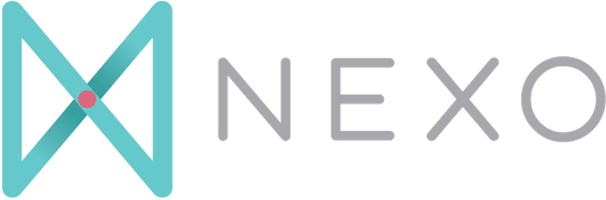
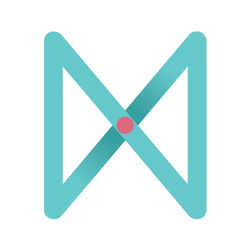

01
Vení como estás
No necesitás saber todo ni venir “preparado”. Queremos conocerte y ayudarte a dar tu próximo paso.

Iglesia cristiana · Comunidad · Discipulado
Somos Comunidad Nexo: compartimos el evangelio y formamos discípulos de Cristo para crecer y servir juntos.

Visítanos
Nos reunimos todos los domingos de 10:00 a.m. a 12:00 m.d. en el hotel Four Points, La Sabana. Durante la reunión ofrecemos Nexo Play para bebés hasta 9 años y Play Plus para edades de 10 a 14.
Primera vez
Una bienvenida sencilla, enseñanza bíblica clara, espacios para niños y preadolescentes, y una comunidad que quiere caminar con Jesús en la vida cotidiana.
No necesitás saber todo ni venir “preparado”. Queremos conocerte y ayudarte a dar tu próximo paso.
Estudiamos la Biblia con reverencia y aplicación práctica para la vida diaria.
Los domingos acompañamos a bebés hasta 9 años en Nexo Play y a chicos de 10 a 14 en Play Plus, para que toda la familia pueda participar.
Creemos que el evangelio transforma personas, familias y comunidades. Por eso nos reunimos para adorar, estudiar la Biblia, servir y acompañarnos en el camino de seguir a Cristo.
Jesús al centro de nuestra fe, mensaje y práctica.
No caminamos solos: crecemos juntos con gracia y verdad.
Formamos discípulos que sirven e influyen en su entorno.
Mensajes y podcast
El podcast de Comunidad Nexo es un espacio para conversar, estudiar y motivar el estudio bíblico con aplicación práctica.
Vivir en comunidad
Conocé personas, hacé preguntas y encontrá acompañamiento.
Participá en discipulado, estudios bíblicos y conversaciones formativas.
Usá tus dones para edificar a otros y bendecir la ciudad.
Calendario de comunidad
Domingos, jóvenes, mujeres, grupos en casas y espacios para niños organizados de forma visual.
Todos los domingos · 10:00 a.m.
Adoración, enseñanza bíblica, comunidad, Nexo Play y Play Plus en Four Points, La Sabana.
1º, 2º y 4º sábado · 5:00 p.m.
Espacio de jóvenes RED por edades: 13-17, 18-26 y una reunión juntos cada cuarto sábado.
Entre semana
Reuniones durante la semana en distintos hogares para estudiar la Biblia, orar y acompañarnos en comunidad.
Ver grupos →Generosidad
La generosidad sostiene la misión, el discipulado y el servicio de la iglesia. Esta sección puede conectarse luego con métodos de ofrenda y una explicación clara de mayordomía.
Registrarme / pedir informaciónContacto
Escribinos para recibir horarios, ubicación, próximos eventos o acompañamiento pastoral.